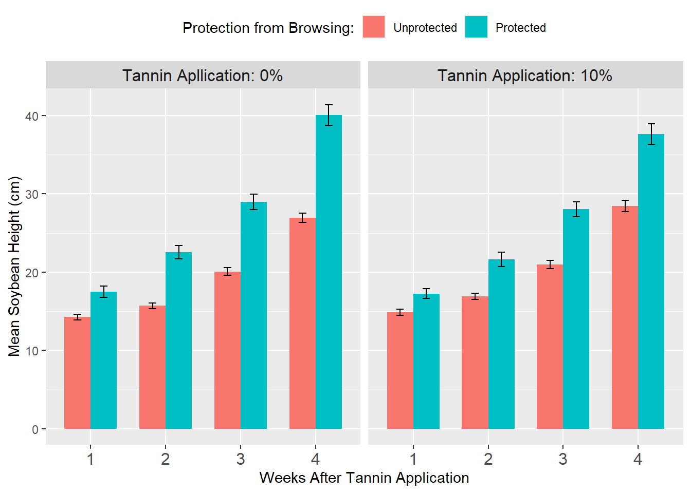

# Read the data
data <- read.csv("Data.csv", header=TRUE)Enclosure Analysis
Analysis info
Looking at differences in mean soybean height between plants protected from browsing to those unprotected from browsing. Individuals exposed to browsing were exposed with variable treatment concentrations (0:control or 1:tannins). Additionally we investigated differences in mean height over time incorporating WAT (Week after application) as an additional predictor variable. Plot and Field as were included as nested random effects.
Response Variable:
- Mean Height (cm)
Predictor Variables:
- Treatment (0: Control, 1: Tannins)
- WAT (Week After Application: 1-4)
- Enclosure (0: Not Enclosed, 1: Enclosed)
- Plot (1-20)
- Field (1-20)
Below is our process of fitting our data to the best possible model.
Initial Enclosure Height Analysis
Reading in Data Source
Sub setting data to:
1) Convert predictor variables to factors with “levels”.
2) Remove unneeded columns.
3) Remove rows with missing Height values (missing values = dead plant or sampling error).
4) Only include measurements from weeks 1 through 4
# Convert categorical variables to factors
data$Field <- as.factor(data$Field)
data$Plot <- as.factor(data$Plot)
data$Treatment <- as.factor(data$Treatment)
data$Enclosure <- as.factor(data$Enclosure)
data$WAT <- as.factor(data$WAT)
# Remove rows with missing Height values and unused columns
data <- data |>
filter(!is.na(Height)) |>
select(-PercentDamage)
# Subset to remove WAT values at week zero
data <- data[data$WAT != "0", ]Exploratory Data Analysis
Calculating and Displaying mean soybean height for treatments across Weeks after application.
# Calculate mean Height for each Treatment and WAT combination
summary_data <- data |>
group_by(Enclosure,Treatment, WAT) |>
summarise(mean_height = mean(Height, na.rm = TRUE))`summarise()` has grouped output by 'Enclosure', 'Treatment'. You can override
using the `.groups` argument.# Displaying mean soybean height for treatments across Weeks after application
head(data) Field Plot Treatment WAT Enclosure Height
181 1 1 0 1 0 14.5
182 1 1 0 1 0 12.5
183 1 1 0 1 0 11.5
184 1 1 0 1 0 16.0
185 1 1 0 1 0 17.0
186 1 1 0 1 0 19.5Calculating standard error for each group
# Calculate mean and SE for each group
enclosure_data <- data |>
group_by(WAT, Enclosure, Treatment) |>
summarise(
mean_height = mean(Height),
se = sd(Height) / sqrt(n()), # Calculate SD from raw data (Height)
.groups = "drop"
)Plotting differences in Protected and Unprotected Plant Heights by Treatment and WAT
# Create the plot with updated facet labels and error bars
ggplot(enclosure_data, aes(x = WAT, y = mean_height, fill = Enclosure)) +
geom_bar(stat = "identity", position = position_dodge(preserve = "single"), width = 0.7) +
geom_errorbar(
aes(ymin = mean_height - se, ymax = mean_height + se),
position = position_dodge(width = 0.7),
width = 0.2
) +
facet_wrap(~factor(Treatment, levels = c(0, 1), labels = c("Tannin Apllication: 0%", "Tannin Application: 10%"))) + # Modify facet labels
labs(
x = "Weeks After Tannin Application",
y = "Mean Soybean Height (cm)",
fill = "Protection from Browsing:"
) +
scale_fill_discrete(labels = c("Unprotected", "Protected")) +
scale_color_discrete(labels = c("No Repellent", "Repellent Applied")) +
theme(
legend.position = "top",
strip.text = element_text(size = 12),
axis.text.x = element_text(size = 12) # Adjust x-axis text size if necessary
)
print(summary_data)# A tibble: 16 × 4
# Groups: Enclosure, Treatment [4]
Enclosure Treatment WAT mean_height
<fct> <fct> <fct> <dbl>
1 0 0 1 14.2
2 0 0 2 15.7
3 0 0 3 20.1
4 0 0 4 26.9
5 0 1 1 14.9
6 0 1 2 16.9
7 0 1 3 21.0
8 0 1 4 28.4
9 1 0 1 17.5
10 1 0 2 22.6
11 1 0 3 29.0
12 1 0 4 40.1
13 1 1 1 17.2
14 1 1 2 21.6
15 1 1 3 28.0
16 1 1 4 37.6Simple enclosure height analysis
Fitting models for simple linear Regression
# Linear Regression for Height
lm_m_height_1 <- lm(formula = mean_height ~ Treatment, data = enclosure_data)
lm_m_height_2 <- lm(formula = mean_height ~ Treatment * WAT, data = enclosure_data)
lm_m_height_3 <- lm(formula = mean_height ~ Treatment * WAT + Enclosure, data = enclosure_data)
lm_m_height_4 <- lm(formula = mean_height ~ Treatment + WAT + Enclosure, data = enclosure_data)Choosing the best model
#ANOVA for differences in models
anova(lm_m_height_1, lm_m_height_2, lm_m_height_3, lm_m_height_4)Analysis of Variance Table
Model 1: mean_height ~ Treatment
Model 2: mean_height ~ Treatment * WAT
Model 3: mean_height ~ Treatment * WAT + Enclosure
Model 4: mean_height ~ Treatment + WAT + Enclosure
Res.Df RSS Df Sum of Sq F Pr(>F)
1 14 921.66
2 8 235.65 6 686.01 18.4829 0.0005743 ***
3 7 43.30 1 192.35 31.0946 0.0008365 ***
4 10 43.57 -3 -0.27 0.0144 0.9974263
---
Signif. codes: 0 '***' 0.001 '**' 0.01 '*' 0.05 '.' 0.1 ' ' 1# AIC to pick the best model
AIC(lm_m_height_1, lm_m_height_2, lm_m_height_3, lm_m_height_4) df AIC
lm_m_height_1 3 116.26347
lm_m_height_2 9 106.44236
lm_m_height_3 10 81.33577
lm_m_height_4 7 75.43391Model lm_m_height_4 has the lowest AIC score.
summary(lm_m_height_4)
Call:
lm(formula = mean_height ~ Treatment + WAT + Enclosure, data = enclosure_data)
Residuals:
Min 1Q Median 3Q Max
-2.8833 -1.0958 -0.0441 1.0377 3.3098
Coefficients:
Estimate Std. Error t value Pr(>|t|)
(Intercept) 12.51951 1.27821 9.795 1.92e-06 ***
Treatment1 -0.04021 1.04365 -0.039 0.970027
WAT2 3.23288 1.47595 2.190 0.053302 .
WAT3 8.54519 1.47595 5.790 0.000175 ***
WAT4 17.30287 1.47595 11.723 3.64e-07 ***
Enclosure1 6.93453 1.04365 6.644 5.75e-05 ***
---
Signif. codes: 0 '***' 0.001 '**' 0.01 '*' 0.05 '.' 0.1 ' ' 1
Residual standard error: 2.087 on 10 degrees of freedom
Multiple R-squared: 0.9527, Adjusted R-squared: 0.9291
F-statistic: 40.31 on 5 and 10 DF, p-value: 2.607e-06Linear regression model indicates that treatment had no significant effect on mean soybean height. Model doesn’t quite show differences height based on treatment and enclosure. An ANOVA model may better show the relationship between treatment and heights of plants unprotected vs those that were protected.
3-way anova
# Main effect of Enclosure on mean height only
# Plants within enclosures were not treated with tannins
anova_mean_height <- aov(mean_height ~ Treatment * WAT + Enclosure, data = enclosure_data)AIC(anova_mean_height)[1] 81.33577summary(anova_mean_height) Df Sum Sq Mean Sq F value Pr(>F)
Treatment 1 0.0 0.01 0.001 0.975110
WAT 3 685.7 228.58 36.951 0.000116 ***
Enclosure 1 192.4 192.35 31.095 0.000837 ***
Treatment:WAT 3 0.3 0.09 0.014 0.997426
Residuals 7 43.3 6.19
---
Signif. codes: 0 '***' 0.001 '**' 0.01 '*' 0.05 '.' 0.1 ' ' 1ANOVA model indicates that plants receiving treatment application and were exposed to browsing resulted in statistically different heights then those in enclosures.